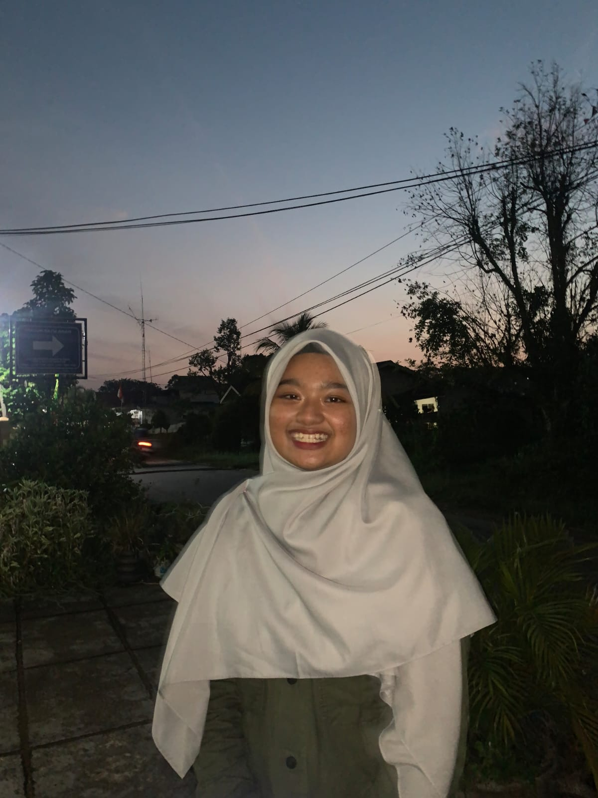

UIN Syarif Hidayatullah Jakarta merupakan kampus islam negeri yang berada di Ciputat, Tangerang Selatan. Salah satu perguruan yang khusus mempelajari nilai keislaman dan universitas islam tertua di Indonesia yang masih berdiri sampai saat ini. Fakultas dan prodi yang ada di UIN Jakarta termasuk banyak dan tidak hanya prodi islam saja, tapi prodi umum juga ada. UIN Jakarta menduduki peringkat 2 sebagai kampus PTKIN terbaik di Indonesia. Informasi selengkapnya dapat diakses disini
Sebagai sebuah lembaga pendidikan tinggi islam, sejarah perkembangan UIN Jakarta tidak bisa dilepaskan dari sejarah perkembangan perguruan tinggi Islam di Indonesia dalam menjawab kebutuhan pendidikan Islam secara modern. Lahirnya UIN Jakarta dapat ditelusuri dari pendirian Pesantren Luhur (pada masa menjelang kemerdekaan), Sekolah Tinggi Islam di Padang dan di Jakarta Tahun 1946, Universitas Islam Indonesia (UII) di Yogyakarta, serta pendirian Akademi Dinas Departemen Agama (ADIA) tahun 1957 di Jakarta hingga menjadi UIN Syarif Hidayatullah sekarang. Selanjutnya, pada tanggal 15 November 1962, dibuka fakultas Ushuluddin yang merupakan perkembangan dari jurusan Imam Tentara, dan kemudian menjadi IAIN al Jamiah al Hukumiyah Syarif Hidayatullah Jakarta. Dalam perkembangannya, status fakultas daerah IAIN cabang Jakarta ini menjadi Sekolah Tinggi Agama Islam Negeri (STAIN). Akhirnya, pada 20 Mei 2002, IAIN Syarif Hidayatullah Jakarta resmi menjadi UIN Syarif Hidayatullah Jakarta dengan terbitnya Keputusan Presiden RI No. 031 tanggal 29 Mei 2002.
| Prodi | Fakultas | Peminat |
|---|---|---|
| Psikologi | Psikologi | 1530 |
| Manajemen | Ekonomi dan Bisnis | 1281 |
| Pendidikan Dokter | Kedokteran dan Ilmu Kesehatan | 1441 |
| Farmasi | Kedokteran dan Ilmu Kesehatan | 901 |
| Teknik Informatika | Sains dan Teknologi | 842 |
Yang mengerjakan tugas ini :
Nama Lengkap : Izza Kinta Ufia
NIM : 11210251000115
Kelas : 5A
